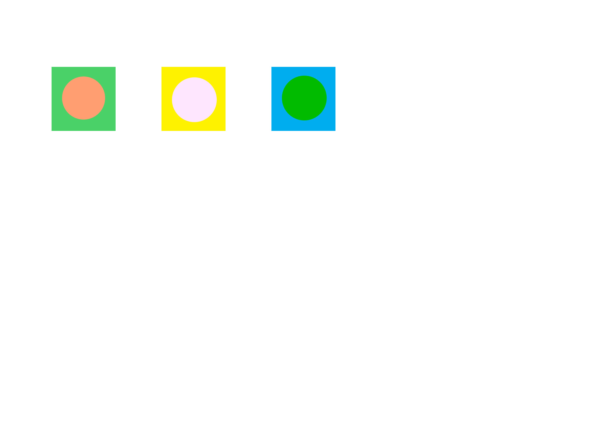

I used a threshold value of 95 because it made the shape of the cat's head and the cat's eyes clearly visible.
I used a threshold value of 1 to see the hidden text
I used a threshold value of 125 because it the text looked the clearest without the edges of the page interfering with the text. There is no single 'best' threshold value, I found that values between 100 and 135 make the text black and the background white without the edges of the page becoming too noticeable
In Photoshop I changed the Lightness value of the square's and circle's LAB values so that they are the same value
To enhance the edges in Photoshop I used the find edges filter (Filter->Stylize->Find Edges) This appears to remove the fill of the music notes leaving only the edges. The flaw of this is that its more difficult to differentiate between different notes and read the words/numbers